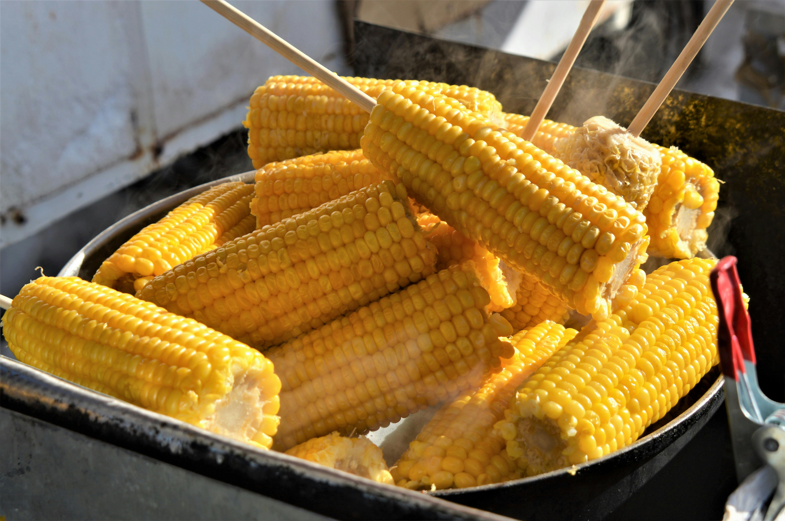

Chibage

List of ingridients
- Maize cobs
- 2l of water
- Salt
The steps to make Chibage
- Put 1 litre of water in the pot
- Add 1 teaspoon of salt in the pot
- Add the maize cobs in the pot and close the pot tightly
- Wait for 40 minutes and you are ready to enjoy